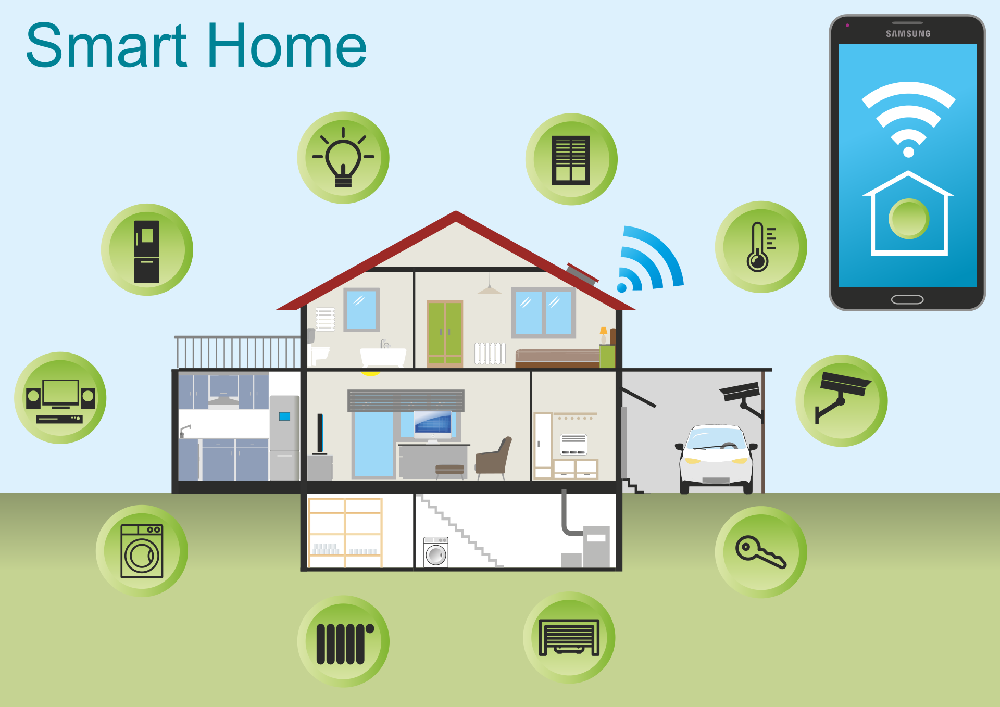

IoT
data, data everywhere
just dump it into flink
Where does the data come from ?
Single smart home with sensors
Lots of homes with sensors
So what do we do with all that data ?
Elderly Care Example
"Door opens at night"
This rather complex, real-life condition makes use of
- stateful event processing with a state machine
- sliding windows, i.e. event orders plays a role
- time windows to wait for the absence of particular events.

Digression: Complex Event Processing
- are immutable
- have strong temporal constraints, i.e. event orders plays a role
- have a managed lifecycle, i.e. become "stale" after some time. This gives rise to time windows when looking for event patterns.
Event Processing
is a method of tracking and analyzing streams of information about things that happen, i.e. events,[1] and deriving a conclusion from it.
Complex Event Processing or CEP, is event processing that combines data from
multiple sources to infer events or patterns that suggest more complicated circumstances.
The goal of complex event processing is to identify meaningful events (such as
opportunities or threats) and respond to them as quickly as possible.
In general event patterns are more important than singular events
Traits/Functional characteristics
of a complex event processing engine
- Supports processing of multi-sourced event streams
- Allows detecting, correlating, aggregating and composing of events.
- Preserve event order
As a corollary a properly scoped "unified" clock/concept of time is required, so that the engine can distinguish between event generation and event ingestion time. - Treat events as stale after the expiration of a time window.
Complex Event Processing in real life
non functional requirements
No IoT event must get lost before being processed. IoT events must be
retained/buffered until handled otherwise we could lose events, resp. do not detect
patterns.
Note that this implies fault tolerance, i.e. restartability while preserving its
internal state.
Events for a particular group of devices (for example grouped by ownership) must be delivered and processed in order.
ScalabilityThe CEP engine must scale with the number of users and rate of events.
Latency
Events must be triggered within a certain time. For the elderly care example and end-to-end
latency within minutes is tolerable.
Note that latency guarantees imply availability
No event pattern should be detected twice.
Nice to have
- Support of a modular programming model for event conditions
- Event conditions can be modified without an outage
- Rule editor for event conditions
- Low total cost of ownership
- Low cost of components (hw,sw,saas)
- Automated instance deployment.
- Automated Ops runbooks.
CEP in an IoT architecture
No event pattern should be detected twice.